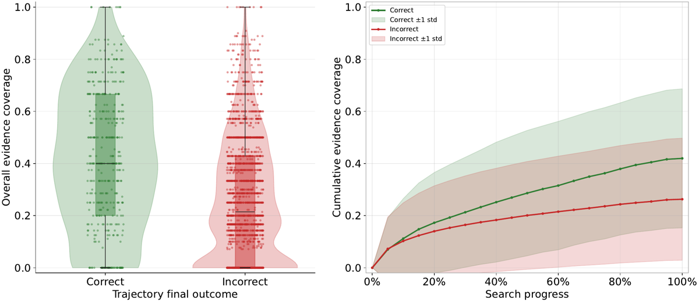
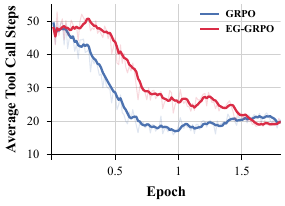
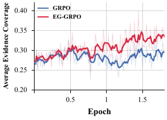

Le crédit pas-à-pas est dérivé d'un jeu fermé de K claims factuels annoté hors-ligne par le générateur de données synthétiques ; un juge LLM unique (Qwen-Flash) lit les réponses d'outils compressées en blocs de citation numérotés et désigne, pour chaque claim, le numéro de bloc le plus précoce qui le contient explicitement ; r_{i,t} = |Δ_{i,t}|/K devient un retour actualisé, normalisé par état de connaissance, puis ajouté à l'avantage de trajectoire GRPO [§3.1-3.4, App. E].
Claim principal, formulé précisément : les annotations de preuve déjà présentes dans les données synthétiques de deep search suffisent à produire une supervision de process ancrée dans la tâche, sans annotation humaine ni PRM auxiliaire, et cette supervision améliore GRPO de +4,96 (4B) et +3,64 (30B) points de moyenne sur cinq benchmarks [§4.2].
⚠️ Ce que le papier ne vérifie pas, et qui est le cœur de la mission : il ne vérifie aucune citation. Il vérifie que la récupération de l'agent a fait apparaître, dans son propre contexte, du texte qui atteste des faits que le générateur sait déjà vrais. Le canal est une couverture de récupération contre un oracle, pas une validité de source. Aucun identifiant de document n'entre nulle part dans le reward.
Origine. 2 316 prompts synthétiques pour le RL [§4.1, App. C]. Pipeline [App. B.1] : 1. entité germe → traversée d'un chemin factuel multi-hop dans « une source de connaissance centrée entités » (la source n'est pas nommée — non précisé ; aucun dump, aucune version, aucune date) ; 2. obfuscation : les entités intermédiaires que l'agent doit retrouver sont remplacées par des indices descriptifs ; 3. longueur du chemin et nombre d'entités cachées = les deux leviers de difficulté revendiqués.
Claims de preuve [App. B.2]. Le même chemin structuré est converti en C_q = {c_1,…,c_K} d'assertions atomiques auto-portantes. Exemple intégral donné (7 claims pour une question à chaîne Carpe Diem Tour → Lincoln → Afrique → Ken Walibora → Research in African Literatures → « polyphony »). Distribution de K : non précisée. Nombre de hops : non précisé. Aucune ventilation de difficulté.
Filtrage [App. B.3] — purement déclaratif, aucun chiffre : trois critères (assertion concrète, vérifiable indépendamment depuis le web public, pertinente pour la requête) ; retrait des échantillons « redondants, ambigus ou non vérifiables » et des claims « exigeant une inférence substantielle au-delà de la preuve récupérée ». Aucun taux de rejet, aucun pass@k, aucun seuil, aucun vérificateur nommé. On ne sait donc pas combien de prompts ont été générés pour en garder 2 316.
Le graphe de preuve a été supprimé du papier. La version commentée de src/latex/2.preliminary.tex et de 3.method.tex définissait un graphe G_q = (C_q, R_q) avec des arêtes de dépendance (« EG » = Evidence Graph) ; le papier publié n'en garde que l'ensemble de nœuds et l'assume : « their internal dependency relations are not used by the training algorithm » [App. B.2]. ⚠️ Conséquence directe : la structure qui permettrait de savoir qu'un claim est un prérequis d'un autre existe dans les données et n'est pas exploitée — le crédit ne distingue pas un claim pivot d'un claim terminal, alors que c'est exactement la distinction dont un raisonnement juridique en chaîne a besoin.
SFT avant RL. 1 000 trajectoires « high-quality » filtrées d'OpenSeeker, réadaptées au format de trajectoire du papier, 1 epoch, 8×H800, batch 32, LR 2e-5, contexte 128k [App. C]. Critère de sélection des 1 000 : non précisé.
Contamination et séparation train/test. Train = synthétique (KG + obfuscation), test = cinq benchmarks publics. Pas de recouvrement par construction, mais : (i) aucune analyse de contamination du pré-entraînement Qwen3 par BrowseComp/GAIA/xBench ; (ii) le SFT vient d'OpenSeeker, dont la version 30B est elle-même une ligne de comparaison du Tab. 2 — leur propre SFT 30B fait 9,3 sur BrowseComp contre 29,5 pour OpenSeeker-30B, donc ils réimplémentent nettement en-dessous de la source de leurs données.
Coût humain. Une seule dépense humaine dans tout le papier : la vérification du juge sur 10 trajectoires / 67 claims [App. D]. Nombre d'annotateurs : « annotators », compte non précisé ; heures : non précisées ; qui : non précisé. Les auteurs revendiquent explicitement l'absence d'annotation humaine comme un avantage de la méthode [§1, §6].
Observation. ReAct standard, format imprimé en entier [App. A, Fig. 5] : <think>…</think>, <tool_call>{json}</tool_call>, <tool_response>…</tool_response>, … , <answer>…</answer>.
Espace d'actions — deux outils, signatures recopiées [App. A, Fig. 4] :
- search(query: string[], num: integer) → « top (default 10) results for each query in one call ». query est un tableau : l'agent peut émettre plusieurs requêtes par appel, ce qui rend le compte de « tool call steps » de la Fig. 3(b) non équivalent au compte de requêtes facturées.
- visit(url: string[], goal: string) → « Visit webpages and return the summary of the content ».
⚠️ Point dur, et c'est le plus grave du harness : la description de l'outil dit que visit renvoie un résumé, pas le contenu. §4.1 dit « extracts page content from a given URL via the Jina API ». Les deux ne sont pas la même chose, et le papier ne tranche pas. Puis, avant le juge, « we first compress the tool responses into a set of numbered citation blocks » [§3.1] — méthode de compression non précisée. Le juge de citation ne lit donc ni la page, ni l'octet source, mais un rendu compressé (possiblement résumé par un modèle) d'un résumé. La provenance est rompue à deux niveaux et rien ne mesure la fidélité de cette compression (le précédent du corpus : 2608.22752, recall 1,00 affiché en perdant 57 % des contraintes).
Single/multi-turn, horizon. Multi-turn, T variable. Plafond de tours : non précisé ; le seul plafond donné est le contexte — 64k en RL, 128k en évaluation [§4.1, App. C]. ⚠️ Entraîné à 64k, évalué à 128k : l'horizon effectif de l'évaluation n'est pas celui de l'entraînement, et le papier ne le commente pas. Dynamique observée : ~48 appels d'outils au début, ~19-20 à la fin pour les deux bras [Fig. 3(b)].
Contexte long. Aucun mécanisme de troncature, de résumé ou de compaction décrit pour la trajectoire (la compaction décrite ne concerne que la fabrication des blocs de citation pour le juge, hors boucle de rollout). La propriété de préfixe semble donc intacte et le ratio d'importance par token valide — à vérifier dans le code, qui n'est pas publié.
Exécution, déterminisme, reset. Web vivant via deux API commerciales payantes (serper.dev → 200, jina.ai → 200, testés). L'environnement est donc non rejouable et non déterministe par construction ; aucun registre épinglé des réponses d'outils, aucune table de récupérabilité, aucune date de collecte. Les timeouts existent (mentionnés en §3.1) mais leur valeur est non précisée.
Erreurs d'outils et sorties mal formées — c'est la partie la mieux traitée du harness [§3.1, « Special cases »] :
- réponse finale absente ou mal formée → pénalité terminale r_{i,T} = −1 ;
- réponse correcte produite sans appel d'outil supplémentaire → état sentinelle S_{i,T} = {SUMMARY_STEP} (pour ne pas polluer le groupage) ;
- « Rollouts that time out or encounter unrecoverable tool failures are excluded from policy updates » → les épisodes sans verdict sont retirés du groupe, pas scorés 0. C'est le bon choix et c'est explicite. Leur part n'est pas reportée.
Exemple de trajectoire. Le gabarit de format est donné [Fig. 5] mais aucune trajectoire réelle n'est imprimée, ni annotée, ni accompagnée de sa sortie de juge.
Il n'y a pas de règle d'agrégation de rewards dans ce papier. Les deux signaux ne sont jamais sommés en un scalaire : ils vivent comme deux flux d'avantage fusionnés au niveau du token. C'est la différence structurelle avec 2610.13157 (où R_mat pesait γ = 0,1 dans une somme) et elle change tout le raisonnement sur le poids.
Canal 1 — outcome. R_i^out ∈ {0,1}, juge Qwen-Flash, prompt recopié intégralement [App. E, Fig. 6] : extraction de extracted_final_answer, comparaison à [correct_answer], « within a small margin of error for numerical problems », sinon no. Normalisation de groupe standard sur N = 8 :
A_i^T = (R_i^out − mean_j R_j^out) / std({R_j^out}), diffusé à tous les tokens de décision.
Canal 2 — preuve, pas à pas [§3.1-3.3] :
φ_i(c_k) = min{ t : c_k est premièrement supporté au tour t }t : S_{i,t} = { c_k ∈ C_q : φ_i(c_k) < t }t : Δ_{i,t} = { c_k ∈ C_q : φ_i(c_k) = t }r_{i,t} = |Δ_{i,t}| / K ∈ [0,1]r_{i,T} = −1, non rétro-propagée par γG_{i,t} = Σ_{k=t}^{T} γ^{k−t} r_{i,k}A_{i,t}^S = (G_{i,t} − mean(G sur le groupe G_{i,t})) / std(…), puis clip à [−C, C], diffusé à tous les tokens de décision du segment de tourR_i^cov = Σ_t r_{i,t} = |∪_t Δ_{i,t}| / K — ⚠️ le brouillon commenté de 3.method.tex précisait « retained as a monitoring quantity but does not enter the training objective directly » ; cette phrase a été coupée du papier publié**, qui définit R^cov sans jamais dire ce qu'il en fait. C'est bien une métrique de suivi, pas un terme de reward.Fusion — la formule exacte [Eq. 13, §3.4] :
A_{i,t} = A_i^T + w · clip( A_{i,t}^S , −C , C )
avec w = 0,5, γ = 0,95, C = 5 [App. C, Reproducibility Statement].
Trois niveaux de groupage en cascade [Tab. 1, p. 6] : niveau 1 clé (q, S_{i,t}) si ≥ M_1 échantillons ; niveau 2 clé (q, |S_{i,t}|) si ≥ M_1 ; niveau 3 clé q si ≥ 2. ⚠️ M_1 n'est jamais chiffré dans tout le papier (grep : 2 occurrences, les deux dans la cellule du tableau). C'est l'hyperparamètre qui décide à quel niveau chaque step est normalisé, donc l'intégralité du mécanisme revendiqué, et il est absent du Reproducibility Statement qui prétend pourtant énumérer « the full … EG-GRPO hyperparameters ».
Masquage. Gradient uniquement sur les tokens de décision (reasoning, tool-call, answer) ; tokens bruts de réponse d'outil masqués [§3.4].
Le terme de step n'est pas un départageur. Avec N = 8 rollouts et un outcome binaire, pour k succès sur 8 (écart-type de population) :
k succès / 8 |
A^T du succès |
A^T de l'échec |
plafond du canal step w·C |
|---|---|---|---|
| 1 | +2,646 | −0,378 | ±2,5 |
| 4 | +1,000 | −1,000 | ±2,5 |
| 7 | +0,378 | −2,646 | ±2,5 |
(⚠️ mon calcul, à partir de N = 8, w = 0,5, C = 5 [App. C] ; A^T = ±√((1−p)/p) ou ∓√(p/(1−p)) avec p = k/8.)
Deux conséquences que le papier n'énonce jamais :
1. Le canal de preuve peut dominer le canal d'outcome d'un facteur 6,6 sur les rollouts corrects d'un groupe facile (k = 7 : 0,378 contre 2,5). Sur les prompts faciles, la policy est donc entraînée sur la couverture de preuve, pas sur la justesse. C'est la signature exacte de la régression sur la bande facile (2609.35646, 96,2 → 94,3) — et aucune ventilation par difficulté n'existe dans le papier pour la voir.
2. Le signe de l'avantage net d'une trajectoire est retournable par le juge de citation. L'avantage net moyen d'une trajectoire vaut A_i^T + w·Ā_i^S (moyenne pondérée par tokens des avantages de step), et Ā_i^S n'a aucune contrainte de somme nulle par trajectoire. Dès que w·|Ā_i^S| > |A_i^T|, le verdict du juge décide du sens du gradient sur la trajectoire entière. Au k = 7 ci-dessus, il suffit de |Ā^S| > 0,76.
Pour comparaison avec le corpus : chez 2610.13157 le terme de source valait 7,7 % du maximum et ne pouvait que départager à l'intérieur d'un groupe ; ici il est co-dominant, parfois dominant. Le papier est donc beaucoup plus exposé — et c'est pourquoi l'absence d'ancrage (§(b) ci-dessous) est décisive et non cosmétique.
[App. D] — manuelle, 10 trajectoires, 67 claims, humain = étalon or : - 91,0 % d'exactitude pour « le claim est-il suffisamment supporté ? » - 94,0 % d'exactitude pour « quelle est la première citation qui le supporte ? »
⚠️ Ce qui manque, point par point, et c'est la liste complète de l'audit :
- FP et FN non séparés — deux agrégats, aucun dénominateur distinct. Et le taux de base de l'échantillon n'est pas donné : sur 67 claims, on ne sait pas combien étaient effectivement supportés. ⚠️ Si ce taux suit la couverture de la Fig. 1 (médiane 0,42 chez les corrects, 0,26 chez les incorrects [§1]), un juge répondant constamment « non supporté » obtiendrait 58 à 74 % d'exactitude (mon calcul) — l'écart au plancher trivial serait alors de l'ordre de 17 à 33 points, et il n'est jamais calculé.
- Pas de plafond de bruit. Ni reproductibilité du juge (plusieurs tirages), ni accord inter-juges (autre famille de modèles), ni accord inter-annotateurs humains. Les trois quantités sont fusionnées en une.
- n = 67 claims. 94,0 % sur 67 ⇒ ~4 erreurs ; l'IC binomial exact est de l'ordre de [85 %, 98 %] (⚠️ mon calcul). Le papier ne donne aucun intervalle.
- Aucune ventilation par position dans la trajectoire — voir (b), c'est la lacune qui compte le plus.
- Le juge n'est jamais re-mesuré en cours d'entraînement. Une seule mesure, hors chronologie. Les onsets de dégradation du corpus tombent à 100-450 steps (2610.15778, 12 cellules sur 12 dégradées) ; ici, zéro palier.
- Juge, reward et métrique sont le même modèle. Qwen-Flash note l'outcome d'entraînement, apparie les claims, et décide de la justesse sur les cinq benchmarks d'évaluation. Le précédent du corpus est explicite (2610.22915 : accord mesuré d'un modèle avec lui-même sur ses propres sorties). Ici, une dérive du juge déplace simultanément le reward et la mesure du résultat, dans le même sens.
Non. Grep sur la source : hack 0, permut 0, placebo 0, limitation 0, abstain 0, omission 0. Aucune solution dégénérée testée, aucun mutant, aucune policy adverse, aucune sonde fixe. Aucune section Limitations. Voir §5 pour ce que le reward rend possible malgré tout.
Algorithme. GRPO + un second flux d'avantage. Rien d'autre ne diffère : objectif clippé token-level standard [Eq. 14], normalisation 1/|T_i| par trajectoire, ratio d'importance par token.
Ce qui diffère du standard, exactement : (i) le flux A^S additif ; (ii) la cascade de groupage à trois niveaux ; (iii) le clip C sur A^S ; (iv) la non-rétro-propagation de la pénalité de format.
Hyperparamètres [App. C] :
| valeur | |
|---|---|
| SFT | 1 000 traj. OpenSeeker, 1 epoch, 8×H800, batch 32, LR 2e-5, contexte 128k |
| RL | 2 316 prompts, 2 epochs, 16×H800, verl |
| LR | 1e-6 |
| Contexte RL | 64k (éval : 128k) |
| Groupe | N = 8 complétions / prompt |
| Batch | 32 prompts × 8 = 256 global |
| Échantillonnage | T = 1,0 · top_p = 0,95 · top_k = 20 · presence penalty 1,1 |
| EG-GRPO | w = 0,5 · γ = 0,95 · C = 5 · M_1 non précisé |
| KL / β | non précisé (grep kl : 1 occurrence, hors contexte d'hyperparamètre) |
| Clipping ε | non précisé (ε apparaît dans Eq. 14, jamais chiffré) |
| Seeds | aucun |
Steps effectifs : 2 316/32 × 2 ≈ 145 updates (⚠️ mon calcul). L'axe des Fig. 3 est en epochs et va jusqu'à ~1,75 — cohérent avec 2 epochs, mais cela veut dire que tout le papier repose sur ~145 pas de gradient. Aucun des paliers d'audit du corpus (5 à 6 avant le step 500) n'est atteignable dans ce régime ; c'est une circonstance atténuante réelle sur la dérive du juge, et une circonstance aggravante sur la stabilité du résultat.
Stabilité. Aucune instabilité rapportée, aucun incident, aucun correctif. Le clip C = 5 est justifié a priori (« prevents any single step from dominating the gradient signal » dans le brouillon commenté) mais jamais mesuré : on ne sait pas s'il mord. ⚠️ Mon calcul : A^S étant un z-score, il n'atteint 5 que dans des groupes dégénérés ; au niveau 3 avec 2 échantillons, |A^S| = 1 exactement. Le clip est probablement inactif en pratique, donc le plafond réel du canal est w·|A^S| ≈ 0,5–1,5 et non 2,5 — ce qui ne change pas la conclusion du §3 (il reste du même ordre que A^T, et supérieur à lui sur les groupes faciles).
Compute. 16×H800, 2 epochs, deux tailles de modèle, cinq bras RL (GRPO, C-GRPO, GiGPO, STAMP, EG-GRPO) + deux ablations à 4 configurations ⇒ au moins 14 runs. Aucune heure-GPU, aucun coût, aucun débit n'est reporté.
Dynamique [Fig. 3, p. 8] : - outcome reward : les deux bras montent de ~0,15 à ~0,42-0,45 et sont indiscernables ; les auteurs écrivent eux-mêmes « comparable or slightly better in later epochs ». L'écart final est dans l'épaisseur du bruit des traces claires. - appels d'outils : effondrement de ~48 à ~19-20 pour les deux bras. EG-GRPO monte d'abord à ~50 vers 0,3 epoch, puis décline plus lentement ; à la fin, les deux convergent à ~19-20. - couverture de preuve : GRPO stagne (~0,27 → ~0,29), EG-GRPO monte régulièrement (~0,27 → ~0,34). - entropie, longueur : non tracées.
⚠️ La lecture qui s'impose : la métrique ajoutée au signal monte, l'objectif réel ne bouge pas entre les bras. C'est la signature canonique de l'optimisation d'un proxy. Que les benchmarks tenus montent quand même de +4,96 est le fait intéressant du papier — et il est mesuré sur un seul run par bras.
Le papier n'en mentionne aucun — pas de section Limitations, pas de section Failure modes, aucun test adverse. Voici ce que le reward rend possible, voie par voie, avec ce que le papier mesure et ce qu'il ne mesure pas.
Trois verrous jouent contre cette voie, et c'est le vrai mérite technique du design :
1. Crédit à la première exposition seulement (φ = min{t}) — « preventing repeated retrieval of the same evidence from receiving additional reward » [§3.1]. Re-citer ne rapporte rien.
2. Dénominateur fixe K — la policy n'a aucun accès en écriture à C_q. Elle ne peut pas élargir la cible.
3. Cible fermée et pré-spécifiée — seuls les K claims de l'oracle comptent ; récupérer 200 sources triviales hors-cible rapporte exactement 0.
La voie qui reste ouverte est le ratissage large : émettre plus de requêtes, plus superficielles, pour augmenter la probabilité de tomber sur un claim de l'oracle. Et la courbe est exactement celle qu'on attendrait [Fig. 3(b)] : EG-GRPO monte à ~50 appels d'outils avant de redescendre, là où GRPO s'effondre immédiatement.
⚠️ Les auteurs lisent cette courbe comme une vertu : « step-level supervision helps mitigate the risk of the agent taking superficial shortcuts, encouraging sufficient interaction with the environment » [§4.3]. Les deux lectures — exploration saine vs ratissage payé en appels — prédisent la même courbe, et le papier ne fournit aucune mesure qui les sépare (ni couverture par appel, ni coût par requête résolue, ni taux de requêtes sans claim nouveau). Ce qui tempère la critique, et que j'ai vérifié sur la figure : à la fin de l'entraînement les deux bras convergent au même nombre d'appels (~19-20), donc le gain final de couverture (+0,05) n'est pas payé en appels au checkpoint évalué. C'est le meilleur argument des auteurs et ils ne l'avancent pas.
C_q et K sont figés hors-ligne par le générateur, avant tout rollout. La policy ne peut ni créer, ni scinder, ni renommer un claim. ⚠️ Mais cette immunité est entièrement empruntée à l'oracle : elle tient parce qu'une vérité terrain de process existe, construite par le générateur de la question. Dès qu'on remplace cet oracle par une décomposition en claims produite à l'exécution (le seul régime possible hors données synthétiques), le verrou saute intégralement.
Le reward de step d'EG-GRPO n'est pas de la forme « ce que j'affirme est sourcé ». C'est un canal de couverture pur : il paie l'acquisition de preuve, pas la sobriété. Trois conséquences :
r_{i,T} = −1, et R^out = 0. Le canal de couverture que 2610.13157 n'avait pas, EG-GRPO l'a — c'est, pour notre usage, son apport conceptuel le plus utile.Franchement dit : la voie 3 n'est pas une menace dans cet environnement, et la raison n'est pas un garde-fou — c'est que l'environnement n'offre pas de livrable long où omettre. Le mécanisme reste muet sur l'exhaustivité d'une réponse argumentée.
L'acquisition de preuve est créditée indépendamment de son usage. r_{i,t} paie le tour où le claim apparaît dans le contexte ; rien ne vérifie que l'agent l'a lu, retenu ou utilisé. Un claim peut apparaître dans le bloc 14 d'un snippet de 10 résultats que l'agent n'a jamais commenté, et le segment de tour qui l'a produit reçoit un avantage positif diffusé sur tous ses tokens de décision. Au niveau du gradient, cela récompense l'émission d'une requête large dont le retour contient la réponse, pas le raisonnement qui l'exploite. Aucun contrôle n'existe là-dessus.
Section quasi vide, et c'est la famille la moins couverte du corpus.
| Question | Réponse du papier |
|---|---|
| Débit de rollouts | non précisé |
| Sync / async | non précisé (verl, donc probablement synchrone — non confirmé) |
| Parallélisme | 16×H800 pour le RL, 8×H800 pour le SFT [App. C] — aucune décomposition train/inference |
| Goulots | non précisé |
| Coût par step | non précisé |
| Appels de juge | 2 par rollout pour EG-GRPO (outcome + appariement de preuve) contre 1 pour GRPO/GiGPO — jamais compté, jamais apparié |
| Coût des API web | Serper + Jina, payants, ~19 à 50 appels/rollout × 8 rollouts × 2 316 prompts × 2 epochs — jamais chiffré |
| Latence du juge de preuve | le prompt [Fig. 7] exige une analyse explicite par claim avant le JSON final sur K claims — c'est une génération longue par rollout, non comptée |
Les quatre pannes silencieuses du corpus :
1. Appels d'outils parsés et exécutés ? Non vérifié, non loggé. Le format <tool_call> est donné ; aucun taux de parse failure, aucun tool_calls: [] surveillé.
2. Compaction qui casse la trajectoire ? La compaction existe (blocs de citation) mais est hors boucle de rollout, donc elle n'invalide pas le ratio d'importance. En revanche sa fidélité n'est pas testée, et c'est elle qui détermine le reward. Point aveugle net.
3. Épisodes sans verdict ? Correctement traité — retirés des updates [§3.1]. Seul des quatre à être explicitement bon.
4. Tokens entraînés = tokens émis ? Non vérifiable (pas de code). Le masquage des tokens d'outil est déclaré [§3.4].
| # | Chiffre annoncé (abstract / intro / contributions / légendes) | Source dans le corps | Verdict |
|---|---|---|---|
| 1 | « achieving average accuracy gains of 4,96 and 3,64 over GRPO » [§4.2] | [Tab. 2, p. 7]. Recalcul 4B : (8,0+23,5+45,9+65,0+19,0)/5 = 32,28 contre (6,7+16,7+34,8+62,7+15,7)/5 = 27,32 ⇒ +4,96. 30B : 34,26 − 30,62 ⇒ +3,64 | confirmé (arithmétique exacte) |
| 2 | « EG-GRPO generally outperforms standard GRPO and existing reward-enhanced and step-level RL baselines » (abstract) | [Tab. 2] : 10 cellules sur 10 au-dessus de GRPO ; mais 1 cellule sur 10 sous la meilleure baseline (30B / xBench-DS-2510 : STAMP 21,1 > EG-GRPO 20,8) | confirmé — le hedge « generally » est honnête, et il a été ajouté après coup : le brouillon de l'abstract (src/latex/0.abstract.tex, ligne 1 commentée) écrivait « consistently outperforms » |
| 3 | ⚠️ « robust and consistent improvements » [§4.2] / « consistently improves over standard trajectory-level RL » [§6] | même tableau, même cellule perdante | contredit : l'abstract s'est corrigé, le corps et la conclusion ne l'ont pas fait. Trois formulations incompatibles dans un papier de 10 pages |
| 4 | « it improves over standard GRPO by 11,11 absolute points on GAIA (45,9 vs 34,8) » [§4.2] | 45,9 − 34,8 = 11,10 | contredit sur la décimale (11,11 vs 11,10). Trivial pris isolément, mais voir #5 |
| 5 | « GAIA improves by 11,14 % absolute from w=0 to w=0,5 » [§4.4] | [Tab. 3, p. 9] : 45,9 − 34,7 = 11,20. Et [Tab. 2] donne 34,8 pour la même ligne GRPO | contredit, deux fois : (i) 11,14 ≠ 11,20 ; (ii) la ligne GRPO vaut 34,8 au Tab. 2 et 34,7 au Tab. 3 pour ce qui est présenté comme le même run. Trois chiffres (11,10 / 11,11 / 11,14) pour un seul écart, aucun ne tombant juste |
| 6 | « correct trajectories have significantly higher coverage (median 41,97 % vs 26,29 %) » [§1] | [Fig. 1 gauche, p. 2], 320 prompts × 8 trajectoires | confirmé comme valeur — ⚠️ « significantly » est employé sans test : grep p = = 0, confidence = 0. Et les deux distributions se recouvrent massivement sur la figure, amas de trajectoires correctes à couverture 0,0 compris |
| 7 | ⚠️ le claim de contribution : « with the most pronounced divergence emerging early in the search process » [§1, contributions] | [Fig. 1 droite] : les deux courbes sont confondues de 0 à ~15 % de progression (écart ≈ 0,01-0,02) et divergent de façon monotone jusqu'à 0,42 vs 0,26 à 100 % (écart ≈ 0,16). La légende des auteurs eux-mêmes dit « this gap widens as retrieval proceeds » | contredit par sa propre figure et par sa propre légende. La divergence est minimale tôt et maximale tard — l'inverse exact de la contribution annoncée. Et c'est le claim qui motive tout le papier |
| 8 | « correct trajectories consistently accumulate evidence faster from the very beginning » [§1] | [Fig. 1 droite] : les bandes ±1 écart-type des deux groupes se recouvrent sur tout l'axe, de 0 % à 100 % | sur-généralisé : vrai en médiane agrégée, faux au niveau de la trajectoire — la couverture n'est pas un prédicteur utilisable par trajectoire, seulement une différence de population |
| 9 | « The LLM judge achieves 91,0 % accuracy in identifying whether evidence claims are supported and 94,0 % accuracy in identifying the first supporting citation » [App. D] | 10 trajectoires, 67 claims, humain = or | confirmé comme chiffre, sur-généralisé comme preuve de fiabilité : n = 67, FP/FN non séparés, pas de plancher trivial (~65 % par réponse constante), pas d'accord inter-juges, pas d'IC, pas de ventilation par position |
| 10 | « the full strategy achieves the best overall performance across the five benchmarks » [§4.4] | [Tab. 4, p. 9] : full 8,0/23,5/45,9/65,0/19,0 ; level-3-only 7,9/20,1/47,1/64,0/19,0. Moyennes (mon calcul) : 32,28 contre 31,62 | confirmé en moyenne (+0,66), contredit sur GAIA — et les auteurs le disent (« although prompt-global normalization slightly outperforms it on GAIA »). Voir #11, c'est le chiffre qui compte |
| 11 | ⚠️ décomposition de l'effet (mon calcul, à partir de [Tab. 3] et [Tab. 4]) | w=0 (= GRPO) 27,30 → EG-GRPO complet 32,28 = +4,98 de moyenne. Niveau 3 seul (normalisation globale par prompt, sans aucun conditionnement par état de connaissance) = 31,62, soit +4,32 du même total |
sur-généralisé : 87 % de l'effet vient du seul fait d'ajouter un flux d'avantage dense de retour actualisé à w = 0,5 ; 13 % (0,66 point) vient du groupage par état de connaissance — c'est-à-dire de la moitié de l'abstract (« state-conditioned relative advantage estimation », Fig. 2, Tab. 1). Et ce composant perd sur GAIA, le benchmark qui porte 45 % du chiffre de tête |
| 12 | « introducing step-level guidance consistently improves performance over the w=0 GRPO baseline » [§4.4] | [Tab. 3] : xBench-DS-2510, w=0,25 → 15,7, identique au w=0 (15,7) ; xBench-DS-2505, w=0,25 et w=0,5 → 65,0 tous les deux | confirmé au sens large (jamais sous w=0), mais deux cellules strictement plates — l'effet n'est pas monotone en w par cellule |
| 13 | « w = 0,5 achieving the best results across all benchmarks » [§4.4] |
[Tab. 3] : xBench-DS-2505 w=0,25 = 65,0 = w=0,5 ; ex æquo, pas « best » | sur-généralisé (ex æquo sur 1 cellule / 5) |
| 14 | « GiGPO underperforms standard GRPO on both xBench-DS-2505 and xBench-DS-2510 » [§4.2] | [Tab. 2] 4B : 54,7 < 62,7 et 11,3 < 15,7 ✓ ; 30B : 57,2 < 57,6 et 18,3 < 20,1 ✓. Et aussi : 4B GAIA 34,6 < 34,8, 4B BC-ZH 16,6 < 16,7 | confirmé, et sous-déclaré : GiGPO est sous GRPO sur 6 cellules sur 10, pas seulement sur xBench |
| 15 | Reproducibility Statement : « Appendix C reports the full … EG-GRPO hyperparameters (w=0,5, γ=0,95, C=5) » |
M_1, le seuil de déclenchement de la cascade de groupage, n'est chiffré nulle part ; β/KL et ε non plus |
contredit — l'hyperparamètre qui détermine à quel niveau chaque step est normalisé est absent d'un énoncé qui se déclare complet |
| 16 | « We provide anonymized implementation code and scripts … in the supplementary material » [Reproducibility Statement] | grep github|anonymous|available at|release sur toute la source : 0 occurrence pertinente. Aucun supplementary joint à arXiv |
introuvable — vrai pour un comité ICLR, inexploitable pour un lecteur arXiv |
| 17 | Lignes « Advanced Agents with Proprietary Data » / « Open-source Data » [Tab. 2] | « from their technical reports » / « from their previous paper » [App. B] | confirmé comme déclaration — ⚠️ ce ne sont pas des comparaisons : harness, outils, juge et contexte diffèrent. À leur crédit, le tableau les isole dans deux blocs séparés et les annonce comme « for reference » |
Synthèse de la 7.0 : 6 confirmés, 5 contredits, 5 sur-généralisés, 1 introuvable. Les deux contradictions structurelles sont #7 (le claim qui motive le papier est contredit par sa propre figure et sa propre légende : la divergence est maximale tard, pas tôt) et #11 (87 % de l'effet vient du flux dense, 13 % du mécanisme qui occupe la moitié de l'abstract — et ce mécanisme perd sur le benchmark qui porte 45 % du chiffre de tête). S'y ajoute une dégradation de qualité d'écriture non anodine : la ligne GRPO change de valeur entre deux tableaux (#5), un même écart est annoncé sous trois décimales différentes (#4, #5), et la phrase dupliquée du §4.1 (« Additionally, which leverages provenance-guided supervision… ») indique une relecture incomplète.
| Qwen3-4B | Qwen3-30B-A3B | |
|---|---|---|
| SFT seul (moyenne 5 bench., mon calcul) | 23,02 | 25,52 |
| + GRPO | 27,32 | 30,62 |
| + C-GRPO (reward de citation, trajectory-level) | 28,60 | 32,46 |
| + GiGPO (groupage d'état générique) | 24,84 | 31,18 |
| + STAMP (provenance, step-level) | 28,20 | 32,74 |
| + EG-GRPO | 32,28 | 34,26 |
| Niveau 3 seul (sans conditionnement d'état) | 31,62 (niveau 1 seul : 30,08) | non testé |
| Juge Qwen-Flash, support de claim / première citation | 91,0 % / 94,0 % (n = 67) | — |
Ventilation de l'écart EG-GRPO − GRPO (mon calcul, points par benchmark) :
| BC | BC-ZH | GAIA | xB-2505 | xB-2510 | part des 2 plus gros | |
|---|---|---|---|---|---|---|
| 4B | +1,3 | +6,8 | +11,1 | +2,3 | +3,3 | GAIA + BC-ZH = 72 % |
| 30B | +0,8 | +3,7 | +6,4 | +6,6 | +0,7 | GAIA + xB-2505 = 71 % |
⚠️ Deux benchmarks sur cinq portent ~72 % du chiffre de tête aux deux échelles, et ce ne sont pas les mêmes (xBench-2505 à 30B, BC-ZH à 4B). Avec un seul run par bras et aucun effectif de benchmark publié, aucune de ces cellules n'a d'échelle de bruit.
Tout est OOD. L'entraînement est 100 % synthétique (marches sur graphe de connaissances + obfuscation), l'évaluation est sur cinq benchmarks humains. C'est un point fort rarement présent dans le corpus : le gain n'est pas un gain in-distribution déguisé. ⚠️ Mais le régime absolu est très bas — BrowseComp 8,0 pour leur meilleur 4B contre 42,1 (REDSearcher-30B) et 53,6 (Gemini 3.1 Pro) [Tab. 2] — donc les écarts se jouent dans la zone où la variance relative est maximale.
Deux axes, tous deux 4B uniquement, un seul run chacun :
- w ∈ {0 ; 0,25 ; 0,5 ; 0,75 ; 1,0} [Tab. 3] — bonne forme (w=0 récupère exactement GRPO), non-monotonie au-delà de 0,5 correctement rapportée.
- cascade de groupage {full, L1 seul, L3 seul} [Tab. 4] — c'est l'ablation la plus informative du papier, et elle dégonfle son propre mécanisme (#11).
Manquent : le placebo de permutation (§(b)), le crédit uniforme à densité égale, l'ablation de γ, l'ablation « toutes les expositions vs première exposition seulement », M_1, tout écart-type, toute ventilation par difficulté ou par position.
Deux tailles. Gain relatif décroissant. Aucune loi d'échelle revendiquée, et à juste titre.
| Case | Verdict | Justification en une ligne |
|---|---|---|
baselines |
✗ | Ce qui est apparié est réel et au-dessus de la moyenne du corpus : même checkpoint SFT, mêmes 2 316 prompts, même N = 8, mêmes 2 epochs, même tool server, même juge, mêmes 16×H800 pour les cinq bras RL. Mais deux des quatre axes sautent : EG-GRPO consomme 2 appels de juge par rollout contre 1 pour GRPO/GiGPO, et émet nettement plus d'appels d'outils sur la majorité de l'entraînement [Fig. 3(b)] ; et la baseline triviale forte est absente — ni crédit uniforme à densité égale, ni GRPO à plancher de tours, alors que le mécanisme revendiqué est précisément « l'agent cherche plus ». GiGPO n'y supplée pas : c'est un autre groupage, pas un placebo. |
ablation |
✓ | Deux axes nommés, chacun isolant un composant, avec un point w = 0 qui récupère exactement la baseline et une ablation de cascade qui va jusqu'aux deux bornes (L1 seul, L3 seul) [Tab. 3, Tab. 4]. La contribution de chaque composant est isolée — même si le verdict qui en sort (87 % / 13 %) n'est pas celui que les auteurs en tirent. |
variance |
✗ | Aucun seed, aucun IC, aucun écart-type dans aucun tableau. Grep : std = 2 occurrences, les deux dans la formule de normalisation ; error bar, confidence, p = = 0. Les bandes ±1 σ de la Fig. 1 sont de la dispersion de données, pas de la variance de run. Des écarts de 0,66 à 0,8 point y sont interprétés. |
coherence |
✗ | 5 contradictions en 7.0, dont #7 (le claim de contribution contredit par sa propre figure et sa propre légende) et #11 (la moitié de l'abstract vaut 13 % de l'effet et perd sur le benchmark dominant) ; plus la ligne GRPO à deux valeurs entre Tab. 2 et Tab. 3, et trois décimales pour un même écart. |
eval |
✗ | Qwen-Flash est à la fois le reward d'outcome, l'apparieur de claims et la métrique des cinq benchmarks — les trois quantités du plafond de bruit sont fusionnées, et une dérive du juge déplace simultanément le signal et sa mesure. Validation humaine : n = 67 claims, 10 trajectoires, agrégats sans FP/FN, sans plancher trivial, sans accord inter-juges, sans IC, sans ventilation par position. Aucune analyse de contamination des benchmarks. |
repro |
✗ | M_1 — l'hyperparamètre qui sélectionne le niveau de groupage, donc le mécanisme entier — n'est chiffré nulle part, pas plus que β/KL ni ε. Ni code, ni données, ni checkpoint, ni lien : code annoncé en « supplementary material » absent d'arXiv. Les 2 316 prompts synthétiques et leurs claims ne sont pas publiés, et la source de connaissance qui les engendre n'est pas nommée. URLs testées : https://arxiv.org/abs/2610.25269 → 200 ; https://serper.dev → 200 et https://jina.ai → 200 (les deux outils sont des API commerciales vivantes et payantes, donc l'environnement est non rejouable même avec le code). |
evidence : 1/6 (ablation), manquant : baselines, variance, coherence, eval, repro.
⚠️ 1/6 sous-estime la qualité de construction interne de la comparaison (cinq bras RL sur un stack strictement partagé, ce que peu de papiers du corpus font) et sur-estime la qualité de l'honnêteté déclarative : le papier n'a aucune section Limitations, aucun failure mode, aucun test adverse. La grille note ce qui est établi, et ce qui est établi ici tient en une ablation.
Plausible mais fragile — et la contribution annoncée n'est pas celle qui produit l'effet.
Trois raisons indépendantes et cumulatives :
A_{i,t} = A_i^T + w·clip(A^S) est une addition, pas une redistribution : Σ_t A_t n'est contraint par rien, le groupage de normalisation est inter-trajectoires, et au w = 0,5 / C = 5 du papier le canal de preuve domine le canal d'outcome d'un facteur allant jusqu'à 6,6 sur les rollouts corrects d'un groupe facile (mon calcul, §3). Le juge ne décide donc pas seulement du placement du crédit : il peut en retourner le signe au niveau de la trajectoire. C'est la configuration de 2609.02817, pas celle de 2610.15840.w = 0,5 — réduction de variance du gradient, densification du signal, raccourcissement de l'horizon de crédit. Et leur propre Tab. 4 pointe dans cette direction : retirer intégralement le conditionnement par état de connaissance ne coûte que 0,66 point sur 4,98.Ce qui reste solide et vaut d'être retenu, et ce n'est pas rien : la géométrie du reward de preuve — cible fermée pré-spécifiée hors-ligne, crédit à la première exposition uniquement, dénominateur fixe, pénalité de format non rétro-propagée, épisodes sans verdict retirés du groupe. Ces cinq propriétés ferment, par construction et sans juge, les deux voies de hacking (citer massivement, fragmenter) qui rendent la plupart des rewards de citation du corpus inutilisables. C'est transposable, c'est bon marché, et ça ne dépend d'aucune des trois affirmations fragiles ci-dessus.

Ce qu'il faut voir : deux choses que le texte ne dit pas. À gauche, les deux distributions se recouvrent massivement — boîte des Correct ≈ 0,20-0,67 (médiane ≈ 0,40), boîte des Incorrect ≈ 0,00-0,22, mais les points Incorrect montent jusqu'à 1,0 et les violons se superposent sur presque tout l'axe ; surtout, un amas net de trajectoires correctes à couverture exactement 0,0 est visible, c'est-à-dire des réponses justes obtenues sans avoir récupéré un seul claim de l'oracle. La cible du reward n'est donc ni nécessaire ni suffisante pour réussir, ce qui borne par construction ce que le canal peut acheter. À droite, le claim de contribution s'effondre : les deux courbes sont confondues de 0 à ~15 % de progression et l'écart ne cesse de croître jusqu'à 0,42 contre 0,26 à 100 % — la divergence est minimale tôt et maximale tard, l'inverse exact de « the most pronounced divergence emerging early » [§1, contributions] ; la légende des auteurs l'écrit d'ailleurs elle-même (« this gap widens as retrieval proceeds »). Et les bandes ±1 σ des deux groupes se chevauchent sur tout l'axe. ⚠️ Pour nous, c'est le point décisif : le mécanisme prétend exploiter le signal précoce, et c'est exactement là que le signal est nul — et là où l'accord du localisateur est le plus faible dans la seule mesure publiée du corpus (44 % dans le premier tiers, 2610.15840).

Ce qu'il faut voir : c'est la courbe que (c) interroge, et elle se lit dans les deux sens. Les deux bras s'effondrent de ~48 à ~19-20 appels : aucun des deux n'apprend à chercher davantage, les deux apprennent à chercher moins de 60 %, pendant que le reward d'outcome triple. EG-GRPO monte d'abord à ~50 vers 0,3 epoch avant de redescendre — c'est exactement la signature du ratissage large que prédit un reward de couverture — et les auteurs lisent ce retard à l'effondrement comme une vertu (« mitigate the risk of … superficial shortcuts »). Les deux lectures prédisent la même courbe, et aucune mesure du papier ne les sépare. ⚠️ Mais le fait qui joue pour les auteurs, et qu'ils n'avancent pas : à la fin, les deux bras convergent au même nombre d'appels, donc le gain final de couverture n'est pas payé en appels au checkpoint évalué. Ce qui reste non apparié est le budget pendant l'entraînement (appels d'outils et appels de juge, 2 contre 1).

Ce qu'il faut voir : la signature canonique de l'optimisation d'un proxy, en une image. La métrique ajoutée au signal monte franchement (~0,27 → ~0,34) pendant que GRPO stagne (~0,27 → ~0,29) — le mécanisme fait donc bien ce qu'il annonce sur sa propre cible. Mais le panneau (a) du même float montre les deux courbes de reward d'outcome indiscernables (~0,15 → ~0,42-0,45, les auteurs écrivant eux-mêmes « comparable or slightly better »). Autrement dit : sur l'objectif réellement optimisé, pendant l'entraînement, le mécanisme ne fait rien de mesurable ; l'intégralité du gain revendiqué apparaît sur les benchmarks tenus, mesurée une seule fois, sans seed. C'est le fait le plus intéressant du papier — et celui qu'un placebo de permutation trancherait en un run.
| Ingrédient | Choix du papier | Équivalent juridique | Transfert | Ce qui manque |
|---|---|---|---|---|
| Source des tâches | 2 316 prompts synthétiques : marche multi-hop sur graphe de connaissances + obfuscation d'entités, K claims atomiques extraits du même chemin que la question [App. B.1-B.2]. Aucun filtrage chiffré, aucun curriculum |
questions de recherche juridique à chaîne vérifiable, engendrées depuis le graphe de citations plutôt que vers lui : partir d'un arrêt pivot, remonter la chaîne (texte applicable → interprétation → confirmation/infirmation), obfusquer les identifiants, exiger de l'agent qu'il la reconstitue | adaptable — et c'est le meilleur transfert du papier : un graphe de citateur est un graphe de connaissances, et il engendre gratuitement le jeu de claims | la source de connaissance n'est pas nommée et n'est pas publiée ; aucune validation que les claims extraits sont suffisants (la couverture médiane des trajectoires correctes est 0,42, et des trajectoires correctes ont 0,00) ; aucune dimension temporelle dans le graphe, alors que c'est l'axe qui définit le droit |
| Vérifieur | juge LLM unique (Qwen-Flash) + prompt d'appariement recopié [Fig. 7] : pour chaque claim, le plus petit numéro de bloc de citation qui contient explicitement le fait. « Only count citations that explicitly contain the fact; the model's own inferences don't count. » Unité = numéro de bloc compressé, jamais un identifiant de document | résolution d'identifiant contre un citateur (existence) → statut de vigueur → juridiction → historique d'appel → entailment du point précis | non, tel quel — la bonne forme, zéro des quatre conditions dures. Le mot « citation » y désigne un numéro de bloc dans le contexte, pas une source | les quatre conditions ci-dessous ; aucun identifiant de document, aucune déduplication par source, aucune vérification que le texte cité existe sur la page ; FP/FN non séparés ; juge = reward = métrique ; fidélité de la compression jamais testée |
| Harness / outils | deux outils, search(query[], num) → Serper top-10 ; visit(url[], goal) → Jina, « return the summary » ; web vivant, non rejouable, API payantes ; tours non plafonnés, contexte 64k (train) / 128k (éval) [§4.1, App. A] |
recherche + filtre de juridiction + filtre de date d'effet + citateur (statut, historique d'appel) + lecture de pinpoint (page, considérant, alinéa) | non | les trois arguments que leurs signatures n'ont pas : juridiction, date d'effet, profondeur d'historique procédural. Et un problème qu'ils ne voient pas : visit renvoie un résumé, puis les réponses d'outils sont compressées avant le juge — la provenance est rompue deux fois, ce qui est rédhibitoire en contentieux où la trace est le livrable |
| Algo | GRPO + second flux additif, verl, N = 8, batch 256, LR 1e-6, T = 1,0, presence penalty 1,1, 2 epochs ≈ 145 updates, KL/β et ε non précisés [App. C] |
identique, rien de spécifique au droit | direct | rien sur l'algo — c'est la part la plus réutilisable et la moins informative. En revanche la forme de fusion (addition non contrainte) est à rejeter, voir (b) |
| Curriculum | aucun. Longueur de chemin et nombre d'entités cachées sont « used to control the reasoning complexity » [App. B.1] mais jamais exploités comme curriculum, et la distribution n'est pas publiée | progression par profondeur de chaîne de citations, puis par juridiction, puis par âge de la source (le cas dur du droit : la chaîne où un maillon a été cassé en appel) | non applicable (il n'y en a pas à transférer) | tout. ⚠️ Et le levier existe pourtant dans leurs données : K et la longueur du chemin sont connus par prompt, ce qui donnerait un curriculum gratuit et une ventilation par difficulté — les deux manquent |
| Anti-hacking | aucun test (grep hack/permut/placebo/limitation : 0). Mais cinq propriétés structurelles ferment deux voies sans juge : cible fermée pré-spécifiée, crédit à la première exposition, dénominateur K fixe, pénalité de format non rétro-propagée, épisodes sans verdict retirés du groupe |
indispensable : un reward de citation est le plus hackable qui soit | adaptable pour la géométrie, non pour la preuve | le placebo de permutation ; le taux de citations non résolvables ; le taux d'assertions finales non supportées ; et le chiffre qui trancherait : la part du crédit de step attribuée à des claims apparus dans un snippet que l'agent n'a jamais exploité (voie 4, §5) |
Une citation juridique doit exister, ne pas être abrogée, être de la bonne juridiction, et ne pas avoir été infirmée en appel.
Ce qu'il attraperait — et la liste est plus courte qu'il n'y paraît, parce que ce vérifieur ne vérifie pas des citations :
- l'absence de preuve dans le contexte : si aucun bloc de citation ne contient explicitement un fait requis, le claim n'est pas crédité. C'est un vrai signal, et il est robuste à la paraphrase parce qu'un juge LLM le traite. Le prompt est d'ailleurs correctement durci sur un point précis : « the model's own inferences don't count » [Fig. 7] — c'est-à-dire que le vérifieur refuse explicitement de créditer la connaissance paramétrique présentée comme récupérée. En droit, c'est exactement la frontière qu'on veut ;
- l'ordre de découverte : quel tour a fait apparaître le fait en premier. Transposé, cela donne une trace de provenance par claim dans le transcript — la seule chose qui, en contentieux, permet de montrer que la proposition vient de la source et non des poids. C'est l'ingrédient que je garderais ;
- la non-couverture d'un claim attendu : il y a ici un canal de couverture explicite, ce que 2610.13157 n'avait pas. Un claim jamais récupéré coûte son crédit, il ne disparaît pas du dénominateur. K est fixe, et c'est précisément le piège d'agrégation (« retirer les non-résolus du dénominateur tarife le silence à zéro ») que ce design évite.
Ce qu'il laisserait intégralement passer — c'est-à-dire les quatre conditions, les quatre :
- l'existence — paradoxalement, oui. La vérification porte sur « ce bloc de texte dans mon contexte atteste-t-il ce fait », jamais sur « cette source existe-t-elle ». Il n'y a aucun identifiant de document dans le reward : le mapping va claim → numéro de bloc → message → tour, et jamais claim → URL → document. Une URL hallucinée dont visit renvoie un résumé plausible produit un bloc de citation parfaitement créditable ;
- l'abrogation — aucune dimension temporelle, nulle part : ni dans le graphe (les arêtes de dépendance sont supprimées), ni dans les claims (« The film Lincoln was released in 2012 » est un fait atemporel), ni dans les signatures d'outils, ni dans le reward. Un texte abrogé en 2021 est, pour ce vérifieur, un fait établi ;
- la juridiction — aucun champ, aucun filtre, aucun terme. Une décision du mauvais ressort supporte un claim aussi bien que la bonne ;
- l'infirmation en appel — rien. Et c'est le cas qui condamne l'approche telle quelle : une citation exacte d'un arrêt cassé satisfait parfaitement ce vérifieur. Le claim est factuellement attesté par le texte récupéré, le bloc de citation est réel, l'appariement du juge est correct, le crédit de step est accordé — et la réponse est une faute professionnelle. Une citation d'arrêt cassé survit à toute vérification d'existence et à toute vérification d'entailment ; elle ne tombe que sur un graphe de citateur signé (qui cite qui, et dans quel sens : confirme / distingue / infirme). Ce graphe est exactement ce que le papier a dans ses données — R_q, les arêtes de dépendance — et qu'il a explicitement jeté (« their internal dependency relations are not used »). C'est l'ironie centrale de ce mémo : la pièce dont le droit a le plus besoin est celle que le papier a supprimée entre son brouillon et sa version publiée ;
- l'exactitude du pinpoint (page, considérant, alinéa) et la fidélité de la citation textuelle — le crédit est au niveau du bloc compressé, deux crans au-dessus du pinpoint ;
- la complétude du livrable — le canal de couverture porte sur la récupération, jamais sur la réponse. Rien ne vérifie que ce qui a été récupéré est effectivement traité dans le mémo rendu.
C'est la distinction la plus utile que ce papier rend visible, et il la rend visible par accident. EG-GRPO a bien le canal de couverture conjonctif que l'audit réclame (K fixe, claims non récupérés comptés), ce qui le protège du « silence prudent » vers lequel un reward de précision pure optimise — et l'abstention y est même directement punie (r_T = −1). Mais ce canal mesure ce que l'agent a mis dans son contexte, pas ce qu'il a écrit. Sa propre Fig. 1 (gauche) montre les deux canaux décorrélés jusqu'à l'absurde : des trajectoires correctes à couverture 0,00 et des trajectoires fausses à couverture 1,0.
Pour un mémo juridique, les deux canaux sont tous les deux nécessaires et ne se substituent pas : - couverture du livrable : la liste d'issues/claims que la réponse devait traiter, en conjonction (pas en somme pondérée) ; - précision du livrable : chaque proposition de droit avancée est rattachée à une source qui existe, est en vigueur, est de la bonne juridiction, et n'a pas été infirmée.
Ce papier n'a que la couverture, et seulement à l'entrée. 2610.13157 n'avait que la précision, et seulement par exact-match. Aucun des deux ne porte le couple, et c'est le couple qui est le livrable juridique.
La géométrie du canal de preuve, pas le mécanisme de crédit. Précisément, les cinq propriétés qui ne dépendent d'aucun juge et d'aucun ancrage :
φ = min{t}) — re-citer ne rapporte rien. Ferme la citation redondante.R = P/(P+F).Version juridique directe : les claims sont des nœuds d'un graphe de citateur, engendrés hors-ligne depuis le graphe réel (arrêt pivot → texte applicable → interprétation → traitement en appel), avec pour chaque nœud un identifiant résolvable et un statut signé par le citateur. Le crédit de step va au premier tour où l'agent résout l'identifiant — vérification déterministe, discrète, externe à la policy, donc le seul niveau que nous puissions rendre non hackable. L'entailment du point de droit reste au juge LLM, en second rideau, et jamais seul.
⚠️ Avec une réserve explicite, qui est tout le point (b) : ne pas reprendre leur fusion. Le crédit de step doit être contraint à Σ_t A_t = A_i^T (le juge décide du placement, jamais du total, 2610.15840), et non ajouté comme un second flux libre.
Expérience A — le placebo de permutation, deux runs. C'est le contrôle manquant, et il est décisif.
Sur leur propre setup (4B, GAIA, le benchmark qui porte 45 % du chiffre), trois bras à budget strictement apparié — mêmes rollouts, mêmes appels de juge, mêmes appels d'outils, mêmes steps :
1. EG-GRPO tel quel (attendu : ~45,9) ;
2. Permutation : même multiset de magnitudes {r_{i,t}} par trajectoire, positions tirées au hasard sur les tours, même densité, même Σ_t r_{i,t}, même actualisation γ = 0,95 appliquée à la séquence permutée, même w, même cascade de groupage ;
3. Crédit uniforme : r_{i,t} = R_i^cov / T — même total, aucune localisation.
Résultat attendu si le mécanisme est réel : le bras 2 retombe au niveau de GRPO (~34,8) et le bras 3 aussi ; seul le bras 1 tient 45,9. La localisation du crédit serait alors établie.
Falsifiant — et c'est mon hypothèse de travail : les bras 2 et 3 conservent l'essentiel des +11,1. Ce que A^S achète n'est alors pas un crédit au bon tour mais un flux d'avantage dense (réduction de variance du gradient, horizon de crédit raccourci, signal non nul quand tout le groupe échoue). Leur propre Tab. 4 pointe déjà dans ce sens : retirer tout le conditionnement par état de connaissance ne coûte que 0,66 point sur 4,98 — 13 % de l'effet pour la moitié de l'abstract.
Second falsifiant, propre à notre usage : si le bras 1 l'emporte mais que sa part de trajectoires à signe d'avantage net retourné (w·|Ā^S| > |A^T|, mesurable sans run supplémentaire sur des logs existants) dépasse quelques pour cent, alors le gain est acheté au prix d'un reward dont le juge peut inverser le verdict — inacceptable en droit, et à corriger en passant à l'ancrage Σ_t A_t = A^T.
Expérience B — zéro GPU, quelques heures de juge et d'annotateur. Celle que je lancerais en premier.
Refaire leur App. D stratifiée par position dans la trajectoire : n ≥ 200 claims, ventilés premier tiers / milieu / dernier tiers des tours, deux annotateurs avec accord inter-annotateurs comme plafond, FP et FN séparés avec dénominateurs distincts, et un panel de juges d'une autre famille de modèles que Qwen-Flash.
Attendu si le papier a raison : les 94,0 % d'identification de la première citation tiennent dans les trois tiers.
Falsifiant, et c'est mon hypothèse : l'exactitude du premier tiers s'effondre bien sous l'agrégat — c'est ce que la seule mesure par position du corpus donne (44 % dans le premier tiers contre 88 % dans le dernier, 2610.15840). Si c'est le cas, la conclusion est double et sévère : (i) le crédit est le plus bruité exactement là où l'intro affirme que le signal compte le plus (#7 de la 7.0) ; (ii) et puisque le crédit n'est pas ancré, ce bruit ne se contente pas de mal placer le crédit — il en déplace le total.
Cette expérience coûte zéro GPU, utilise des trajectoires déjà produites, et tranche la question (b) à elle seule.
« Contraignons-nous Σ_t A_t, et d'où vient notre jeu de claims ? » — deux questions qui ne se répondent pas ensemble, et une troisième qui décide des deux.
Σ_t A_t = (R − μ)/σ, le juge décide du placement et jamais du total) ou des additions comme ici (A^T + w·A^S, somme libre, normalisation inter-trajectoires) ? À décider une fois, au niveau de la bibliothèque d'avantage, pas par papier : c'est la seule propriété du corpus qui rende l'erreur du juge incapable de retourner le signe d'une trajectoire, et elle est gratuite. Corollaire à budgéter : la garantie est vide quand tout le groupe échoue — le régime du cold start, qui sera le nôtre sur les dossiers durs.C_q est fermé, pré-spécifié et inaccessible en écriture à la policy. Qui écrit notre C_q ? Si c'est un LLM à l'exécution, la voie « fragmenter » se rouvre intégralement et il n'y a plus de dénominateur fixe. Si c'est un graphe de citateur, alors : l'avons-nous sous licence utilisable dans une boucle d'entraînement (pas seulement à l'inférence), avec identifiant résolvable, statut de vigueur, juridiction et historique d'appel signés ? C'est le seul des quatre niveaux qui soit déterministe, bon marché et non hackable — donc le seul qui puisse porter un reward dur.visit qui renvoie un résumé) ? En contentieux la trace est le livrable. Il faut trancher dès l'infra : registre épinglé non compactable des réponses d'outils, fidélité de toute compaction testée hors du reward et loggée par événement avec un statut refusable — et une réponse claire à « notre environnement de rollout est-il rejouable ? », à laquelle ce papier, qui interroge le web vivant via deux API payantes sans aucun registre, répond non sans jamais le dire.